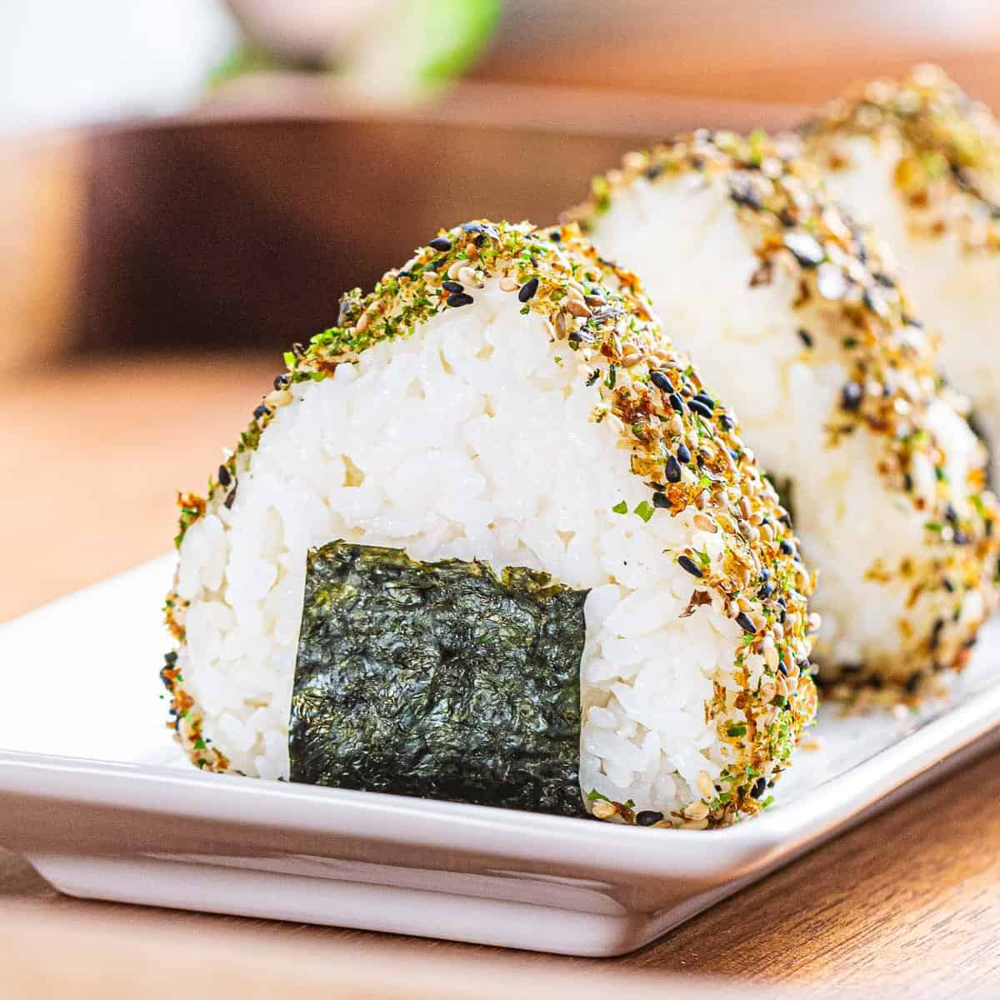

Onigiri

Onigiri is a Japanese rice ball. It is made by shaping a ball of cooked rice and filling it with a variety of ingredients. It is a popular snack food in Japan, and is often wrapped in nori (seaweed) or wrapped in a mesh bag made of dried gourd. It is also popular in other Asian countries, such as Korea, China, and Taiwan.
Ingredients
- 2 cups of Rice - Use short or medium-grain rice that's sticky for easy shaping. You can use leftover rice or frozen rice for this recipe but be sure it's warm before making onigiri as cold rice doesn't adhere well together. Long-grain rice such as Jasmine rice is not recommended as it's not sticky enough to hold together.
- Furikake - This is a Japanese seaweed seasoning
- Nori wrapper - Thin or thick strips of nori are used to wrap the onigiri so it can be eaten by hand without the rice sticking to your fingers.
Instructions
- Shape by hand - Wet your hands with water and rub them together with a pinch of salt. The salt adds more flavor and acts as a preservative while the water helps avoid the rice sticking to your hands (using gloves helps too). Take about ½ cup of warm rice in your hands and firmly but gently mold the rice into a triangular shape.
- Shape with a mold - Spray a bit of water and add a pinch of salt to your onigiri mold. Add the appropriate amount of rice to fill the mold and press down to create a triangular shape.
- Add filling (Optional): If adding the filling, create an indentation into the rice before shaping and add about 1 tablespoon. Enclose the filling with rice and shape with your hands or with a mold.
- Furikake topping: Press the onigiri into the furikake topping to cover the edges or sprinkle on top.
- Nori wrapper: Wrap the onigiri with the strip of nori seaweed if serving immediately. If making ahead, wait until right before serving to add the nori as it can get soggy from the moisture from the rice. A crisp sheet of nori is essential for good onigiri.
Back to Home